扫描仪制作说明
* 该例程针对“BENQ 5000S 扫描仪”为例进行详解
㈠.制作
1.制作思路：
扫描仪 其实大家应该不是很陌生，基本已经作为大众生活用品走进了人们的视线，一般来说，在应用方面扫描仪的厂商会提供相应的应用程序供人们使用，当然一般流行的图象类软件也直接支持扫描仪工作，但是却不是所有人都能很好的用一种编程语言去驱动扫描仪的工作， 在易语言中，提供了专门操作扫描仪的支持库供大家编程使用，下面将会通过例程帮大家学习如何用易语言去控制扫描仪，协助我们自己开发的软件完成相应的工作。
2.制作详解：
（1）安装驱动
在我们操作的环境中打开 其他文件\扫描仪驱动\5000sDriver（当然大家购买扫描仪后，会有驱动文件，按照说明书寻找相应的驱动），双击Setup.exe进行安装 ，出现如下图（图-1），选择“中文（简体）”项，点击“下一步”。
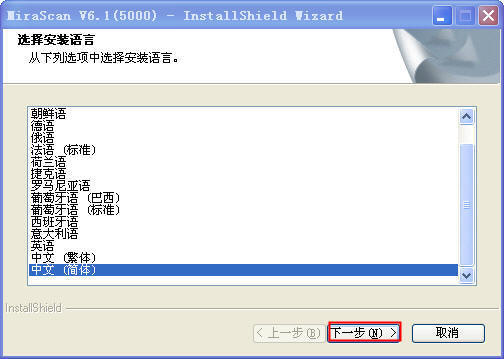
图-1
出现如下图（图-2）的安装准备过程，等待程序安装。
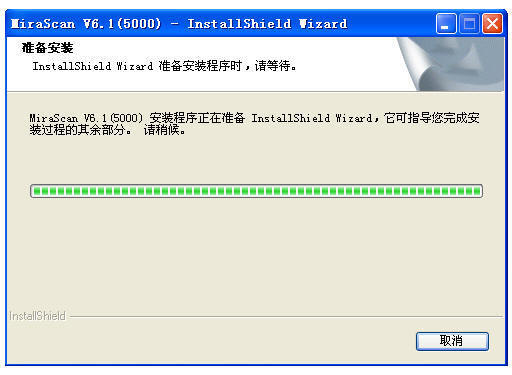
图-2
之后出现如下图（图-3），点击“下一步”开始安装。
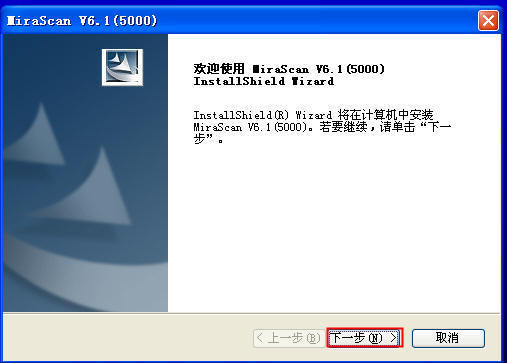
图-3
指出出现如下图（图-4）的安装过程，驱动程序正在安装。
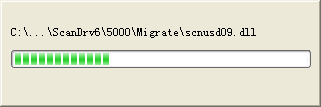
图-4
进度结束后出现如下图（图-5），点击“完成”。
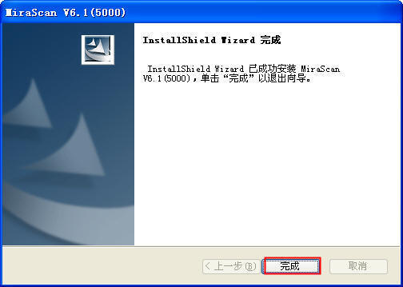
图-5
这时扫描仪驱动以安装完成，打开我的电脑，看到类似如下图（图-6）的设备。
图-6
（2）程序设计
（1）按照（图-1）所示添加窗口及组件
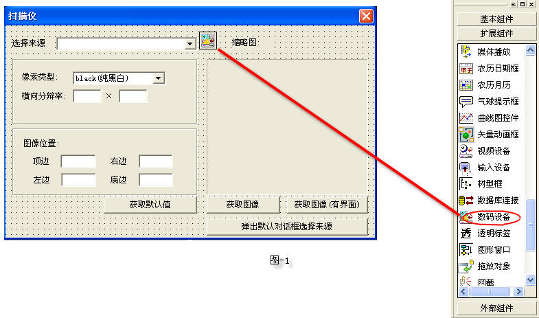
（2）选择来源【列举MiraScan V6.1(5000)】
当我们要进行扫描时首先要选择来源，代码如（图-2）,运行界面如（图-3）
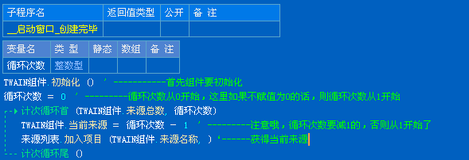
图-2
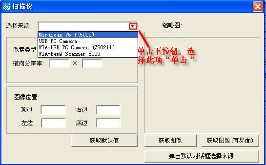
图-3
（3）默认取值
在扫描图片时我们要设置图像的清晰度和图像的位置及分辨率，一般程序都有默认值，这里我们也可以选择默认值，单击“获取默认值按钮”进入按钮事件如（图-4）,运行结果如（图-5）
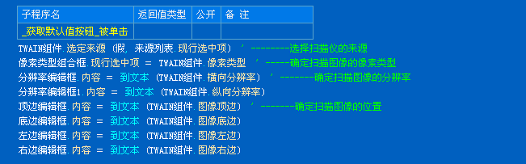
图-4
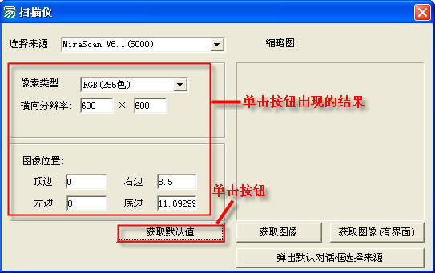
图-5
（4）获取图像
点击“获取图像”按钮进入获取图像按钮事件代码如（图-6），运行结果如（图-7）
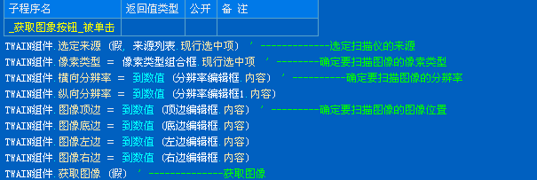
图-6
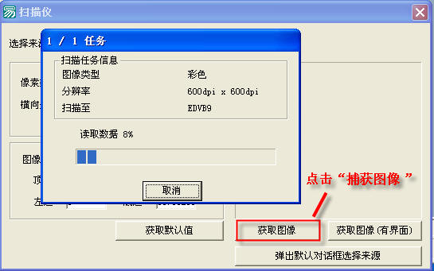
图-7
（5）获取图像（有界面）
如果再捕获图像时要看看捕获的图像是否满意，点击“获取图像”（有界面）按钮，进入单击事件代码如（图-8），在获取界面图像界面时我们要借助图片传送完毕命令界面如（图-9），代码如（图-10），运行结果如（图-11)
图-8
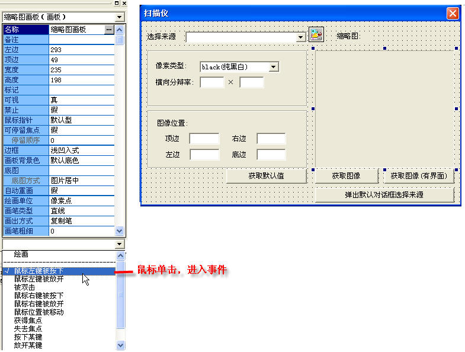
图-9
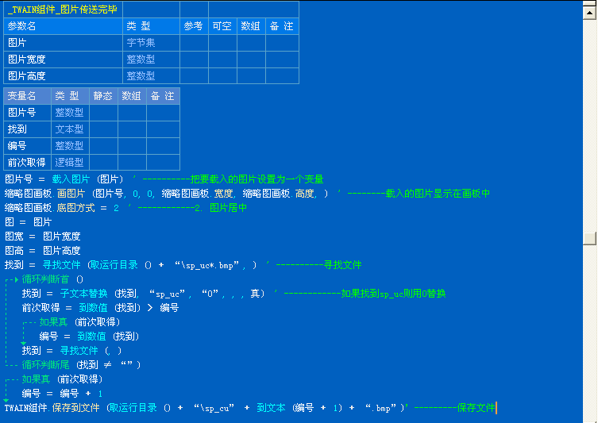
图-10
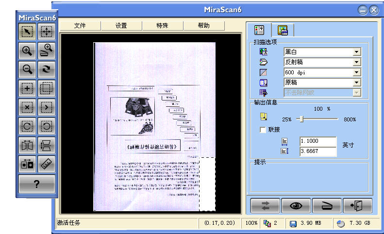
图-11
（6）预览图像
当我们要预览一下先前已有的图片时，可以新建一个预览窗口，窗口创建完毕之后代码如（图-12），演示如（图-13）， 这是您所要得图片将会显示在窗口图片框中，双击图片框运行结果如图（14）
图-12
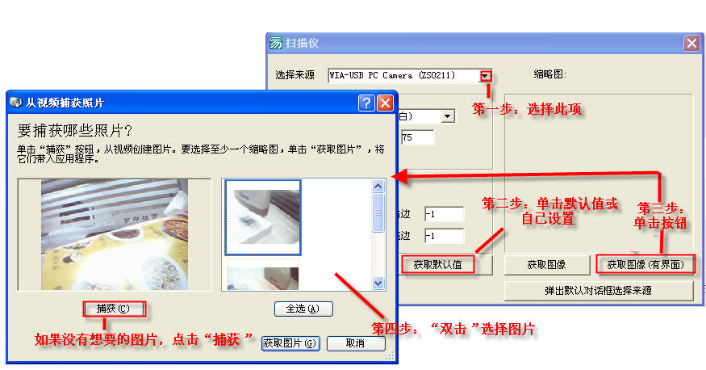
图-13
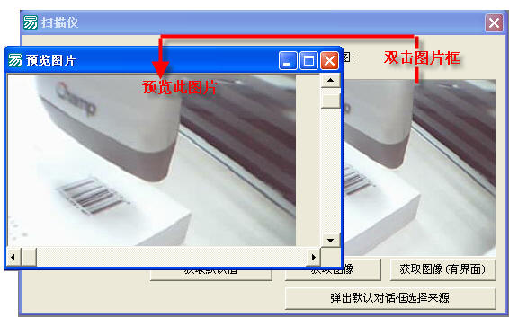
图-14
|
版权所有 大连大有吴涛易语言软件开发有限公司 电话:86-0411-88995831 传真:86-0411-88995834 |